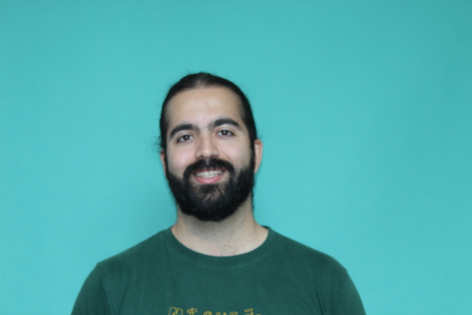

albert.catalan-tatjer[at]tue.ellis.eu | Google Scholar | GitHub

I am a first year PhD student at the safety- & efficiency- aligned learning (🦭) group advised by Jonas Geiping funded by IMPRS-IS and Amazon Science Hub. I am excited about most things deep learning, especially optimization and inference efficiency. Fundamental to my research is the implementation of mathematical ideas on computer technologies. In my free time I enjoy literature, science, and sports.
I am currently working on continual learning, and long-context modelling.
* equal contribution
{% endif %}